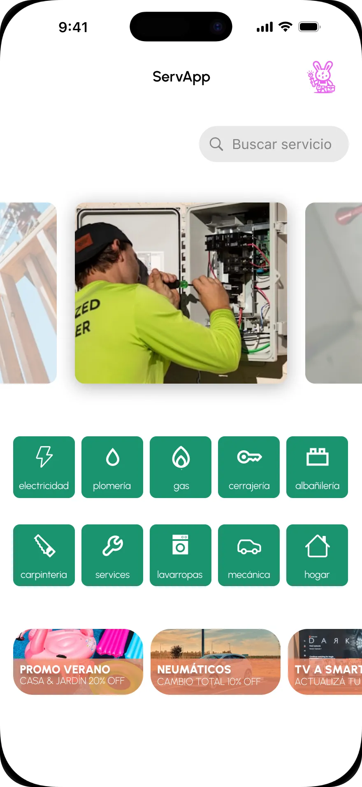
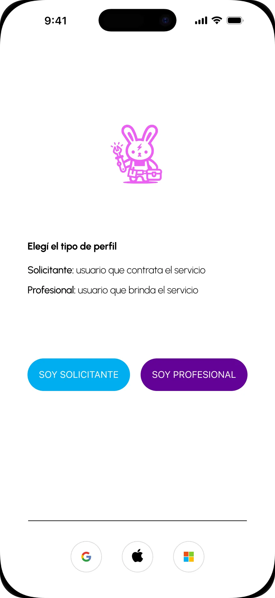
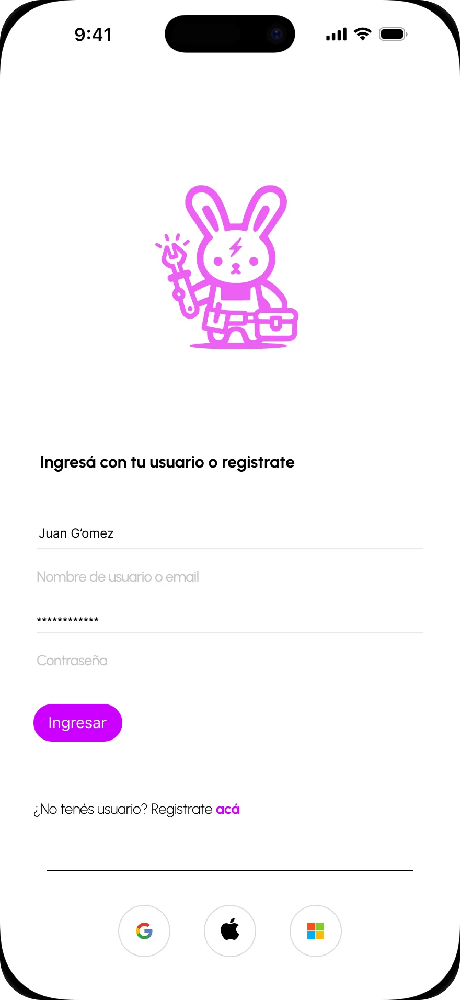
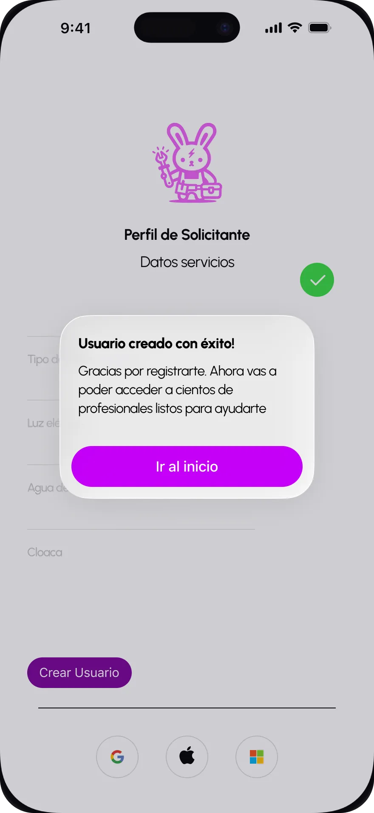
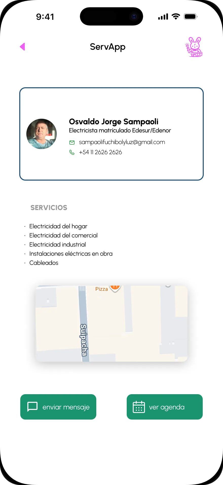
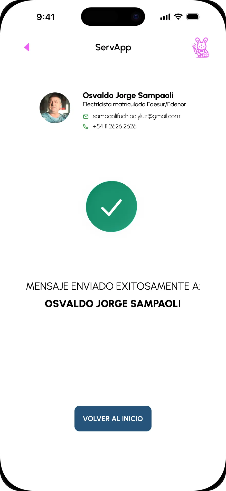

Designing a Trust-First Interface for Home Emergency Services
Project Overview
ServiApp is a mobile application designed to connect users with home service providers in situations of urgency or immediate need, such as repairs or technical failures at home.
The product is aimed at people who need to quickly find a reliable professional when they do not already have a trusted contact available.
This project was developed as part of a UI Design course provided by the Government of the City of Buenos Aires, where the UX flow and functional requirements were predefined. My responsibility focused on translating that UX into a clear, usable, and scalable visual interface.
The Assignment
The project started with a predefined UX research package, which included benchmarking of similar applications, a defined user persona, empathy maps, user journey maps, and additional insights.
As part of the assignment constraints, the research could not be modified: no insights could be added or removed. The only allowed exception was to intentionally deprioritize specific findings if a clear UI-level justification existed.
My responsibility was fully focused on the UI design and interaction layer. I had full autonomy over the visual system, layout decisions, component hierarchy, and interaction patterns, with the requirement to prototype at least one complete critical flow—from login/registration to the execution of a key user action.
This setup required translating existing UX decisions into a coherent, usable, and production-ready interface while ensuring consistency across the entire user journey.
Key UI Decision
One of the core UI decisions was to design a minimal and consistent design system, with a reduced set of components and limited visual variations. The goal was to reinforce a sense of stability and reliability, especially considering that users interact with the app in high-stress or urgent situations. A predictable interface reduces cognitive load and increases user confidence.
Another key decision was the integration of maps as a central interaction element. Maps are used both to select professionals by geographic area and to clearly communicate each provider’s service coverage. This prevents unnecessary contact attempts and sets accurate expectations before initiating communication.
Finally, pricing was intentionally designed around predefined cost ranges, with a minimum baseline enforced for each service. This approach balances transparency for users with fairness for service providers, allowing both parties to quickly assess whether a service is affordable and aligned with expectations before proceeding.
Learnings & Reflections
his project helped me strengthen my ability to build lean and fast design systems. Working with strict deadlines required early design decisions that could scale across the interface without constant iteration. Defining a reduced component set early became a practical tool to maintain speed and consistency.
Another key learning was working with a rigid UX research framework created by someone else. I was not able to modify the research or validate UX decisions in parallel with UI design, which forced me to rely entirely on interpreting documented insights. This improved my ability to translate abstract findings into concrete interface decisions.
Finally, this project reinforced the value of designing within strict constraints. Having full visual freedom but limited time required resisting unnecessary creativity and focusing on clarity, familiarity, and usability. Intentionally limiting design options helped prioritize what truly mattered for users interacting with the app in high-stress situations.
Gallery





